← Volver al inicioICO ALREDEDOR DEL MUNDOUna comunidad. Distintas ciudades.
La misma intención: comunicar mejor.
Monterrey forma parte de una comunidad que ha cruzado ciudades, países y culturas.
🇲🇽 MéxicoMonterrey · CDMX · Guadalajara
🇪🇸 EspañaMadrid · Barcelona · Valencia · Mallorca · Andalucía · País Vasco · Aragón · Catalunya
🌎 LatinoaméricaCosta Rica · Ecuador · Perú · Brasil · Colombia · Venezuela · Argentina
🌍 Otras ciudadesMiami, EE. UU. · Frankfurt, Alemania
EXPERIENCIAS EN DISTINTAS CIUDADES
Desliza para recorrerlas.
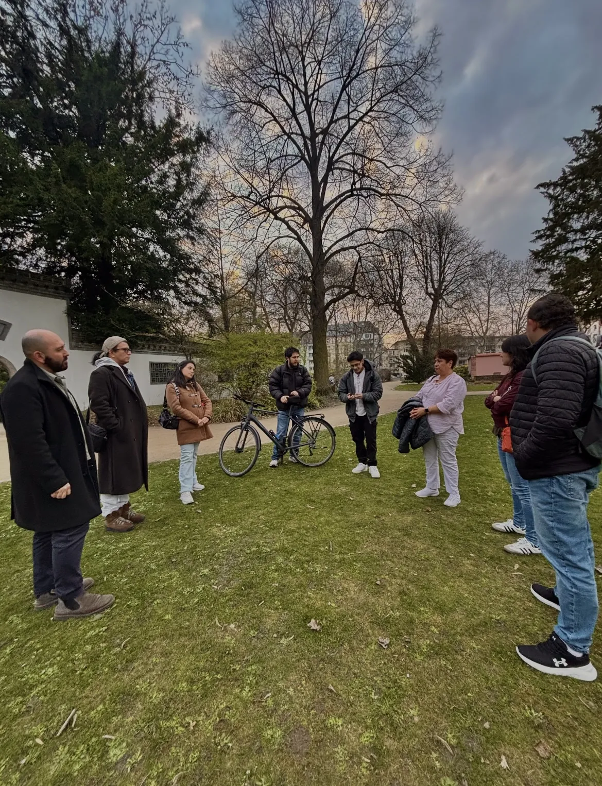
🇩🇪FRANKFURT, ALEMANIA
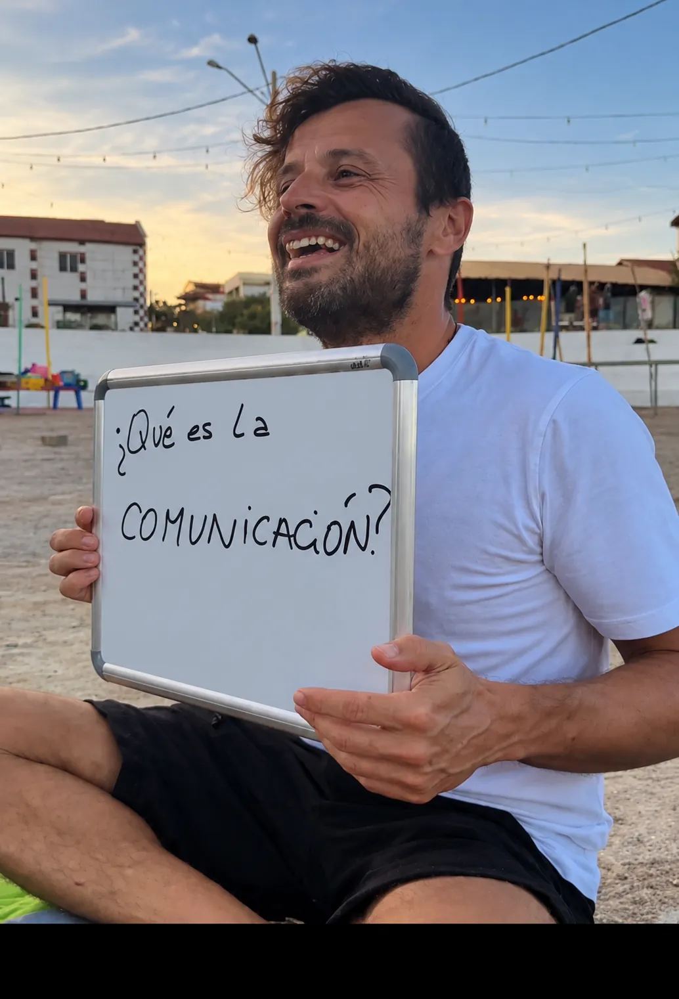
🇧🇷BRASIL
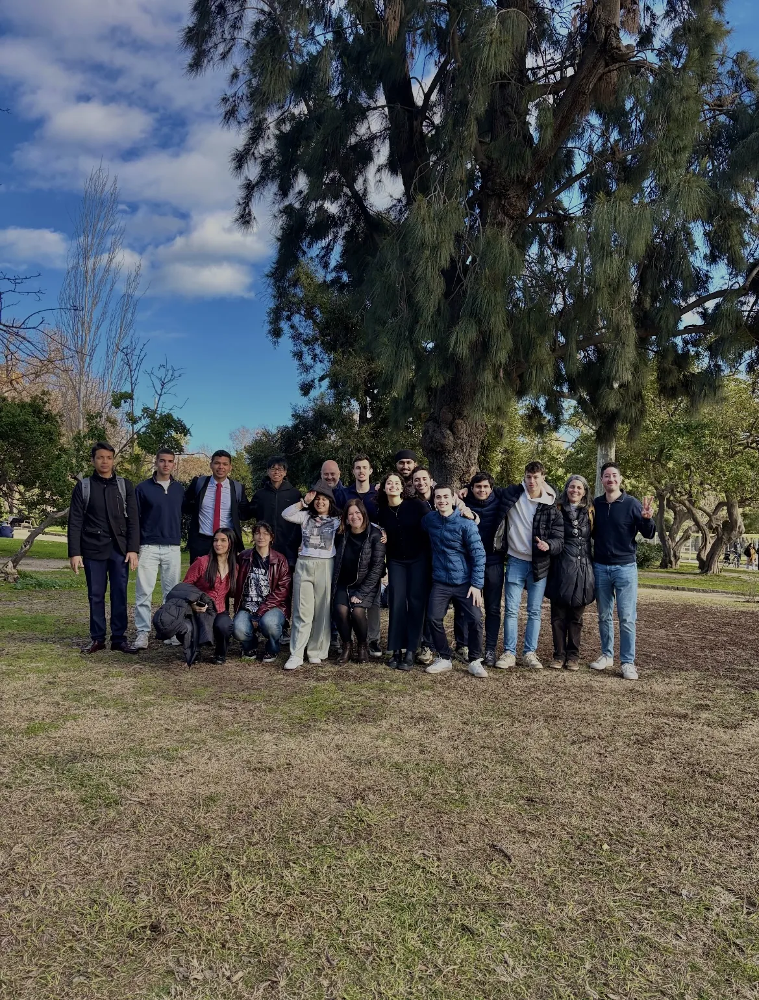
🇪🇸CATALUNYA, ESPAÑA
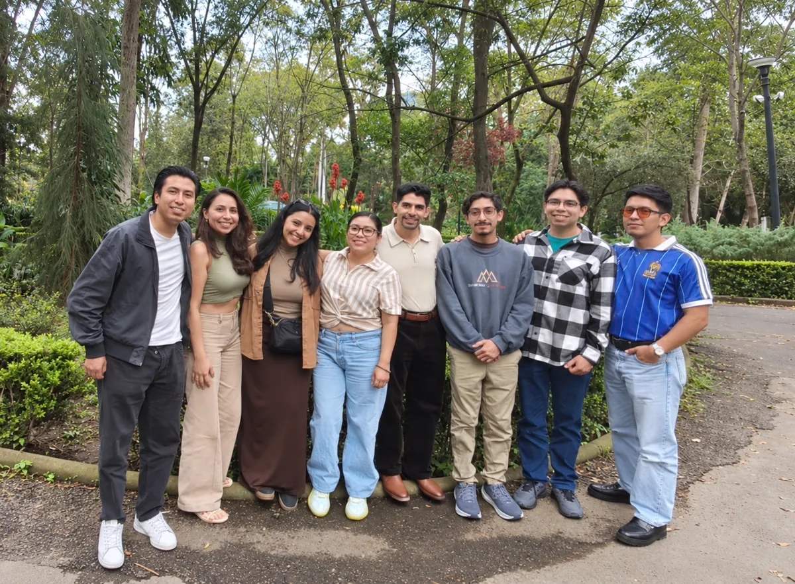
🇲🇽CDMX, MÉXICO
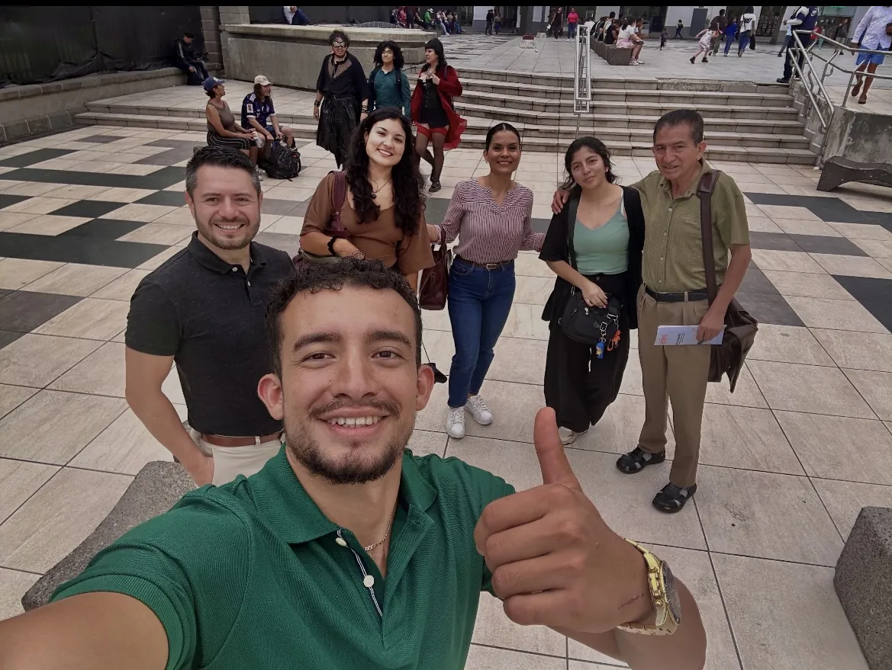
🇨🇷COSTA RICA
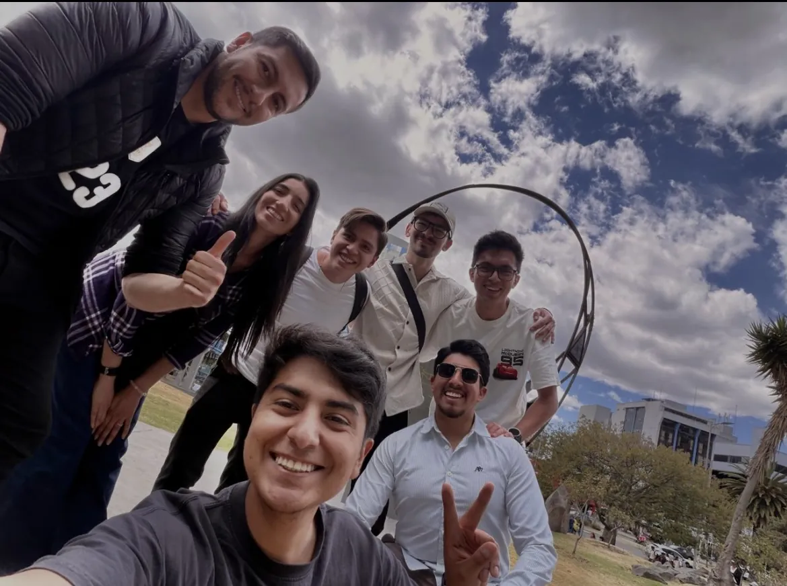
🇪🇨ECUADOR
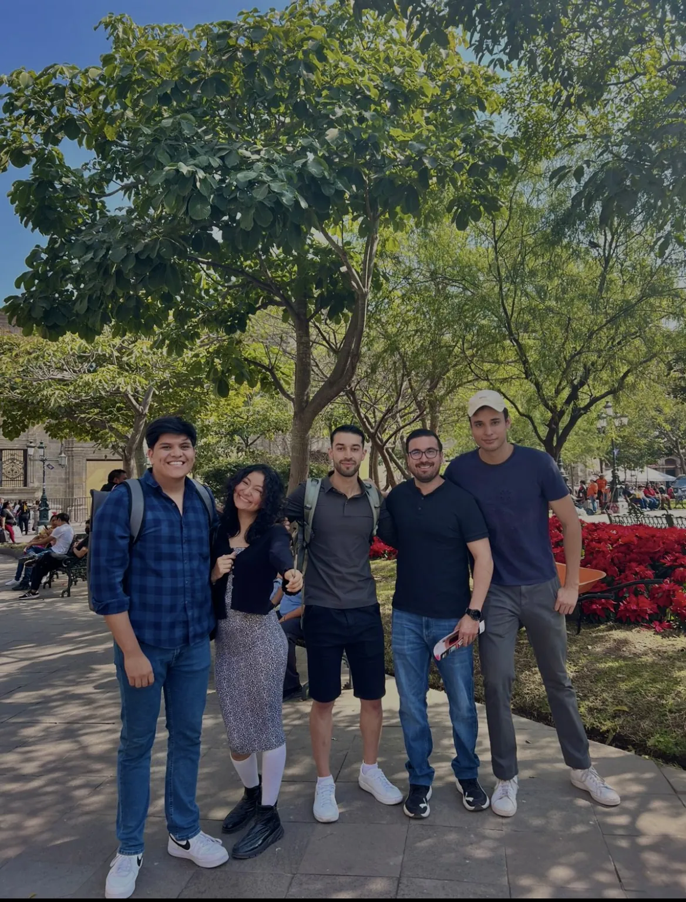
🇲🇽GUADALAJARA, MÉXICO
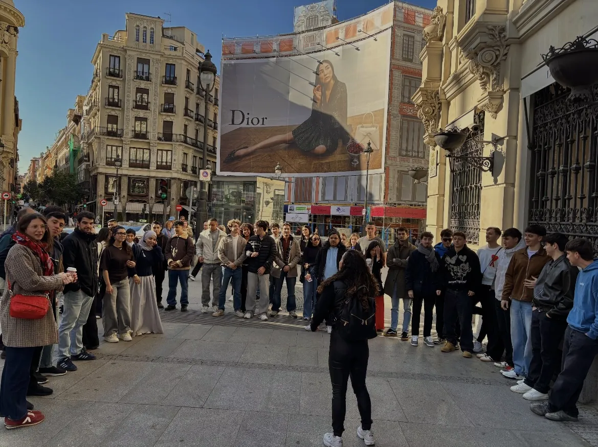
🇪🇸MADRID, ESPAÑA
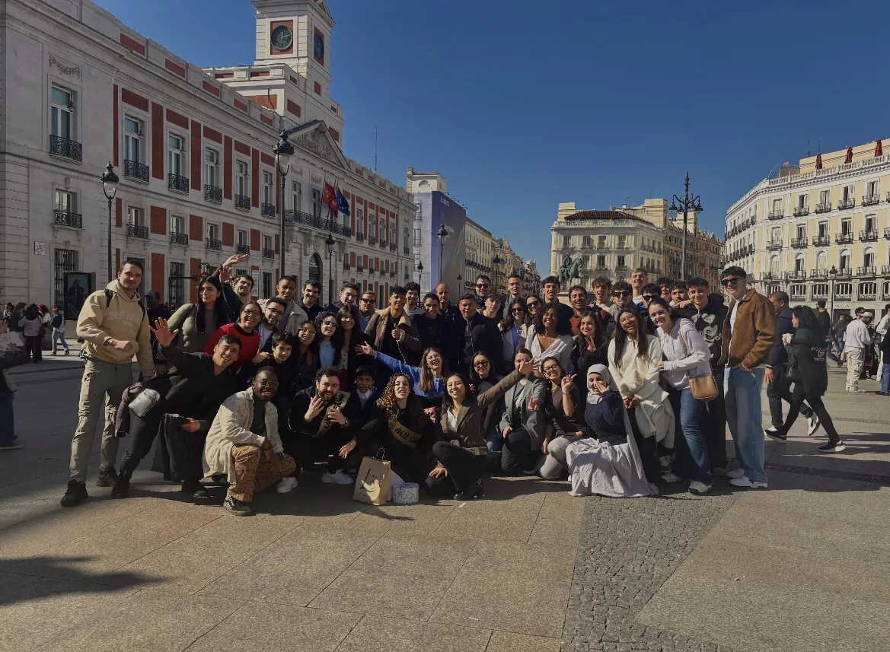
🇪🇸MADRID, ESPAÑA
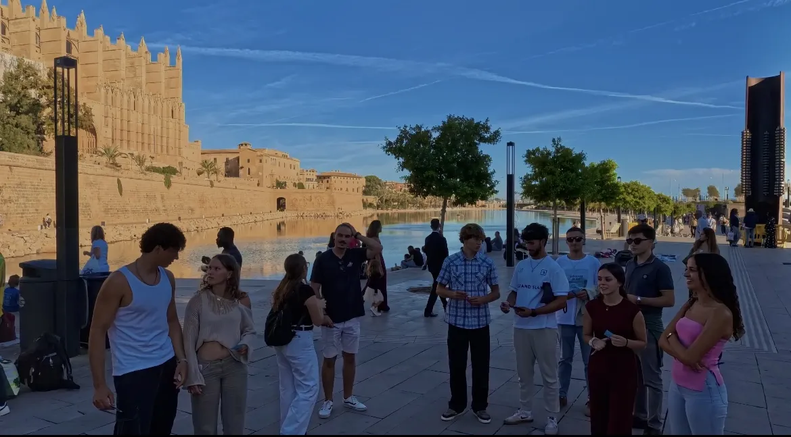
🇪🇸MALLORCA, ESPAÑA
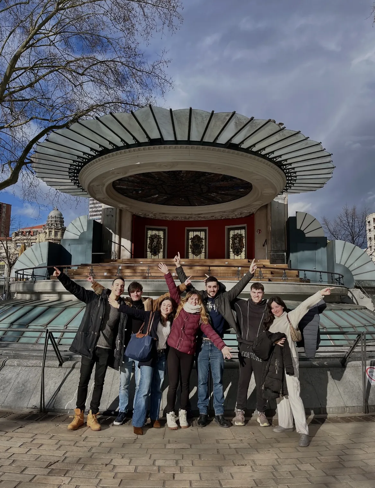
🇪🇸PAÍS VASCO, ESPAÑA
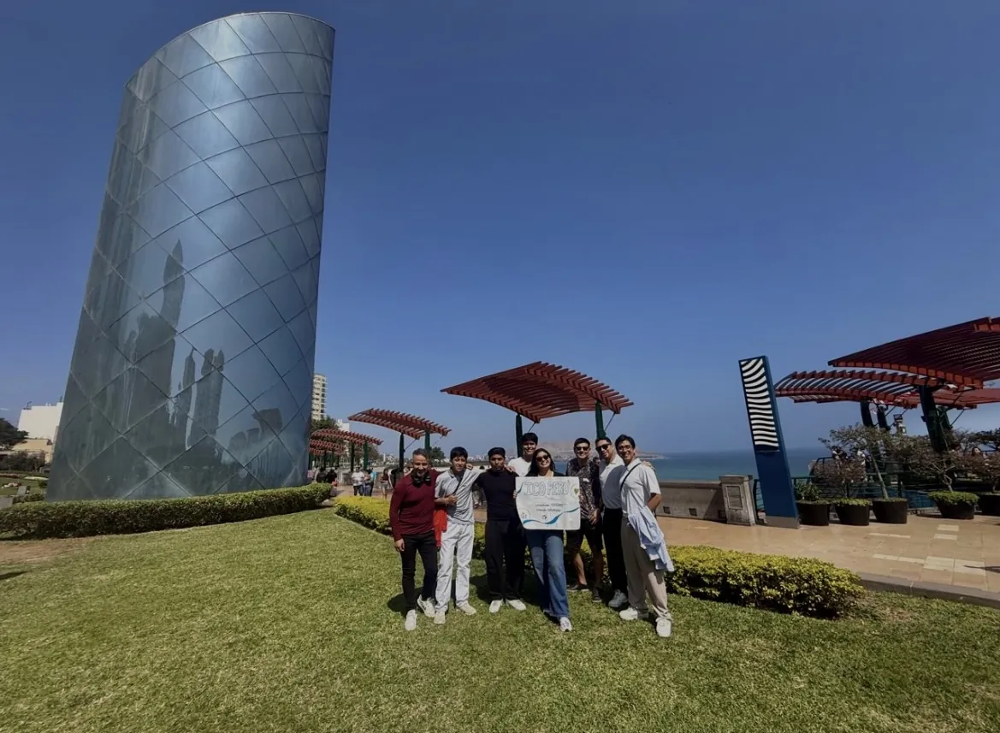
🇵🇪PERÚ
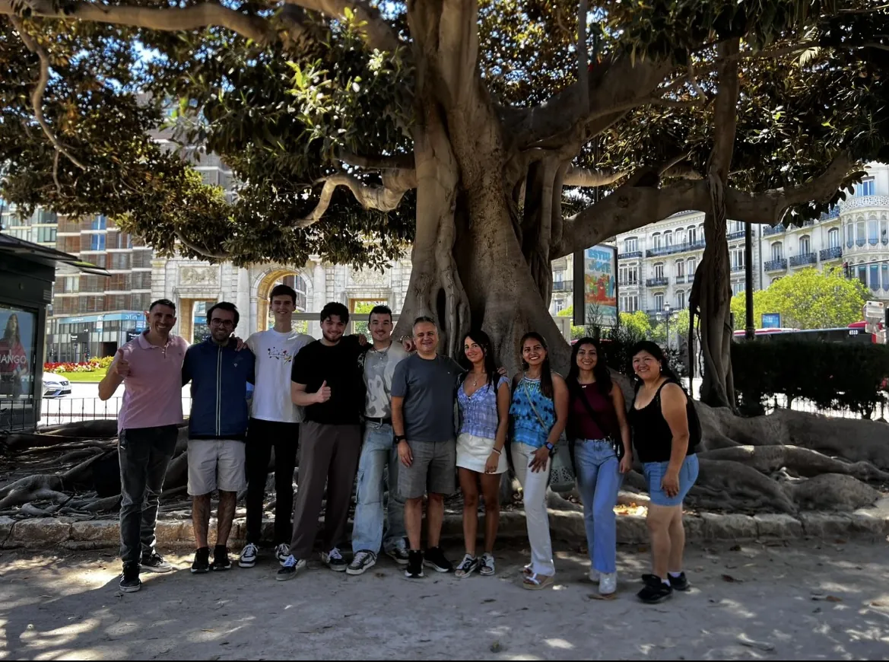
🇪🇸VALENCIA, ESPAÑA
Monterrey forma parte de una comunidad que ha cruzado ciudades, países y culturas.